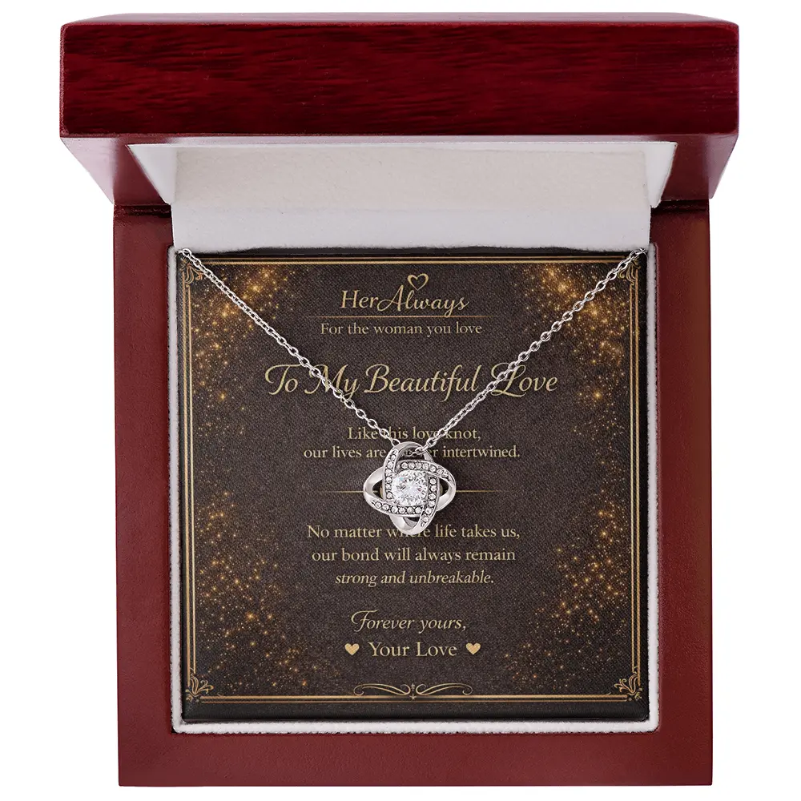
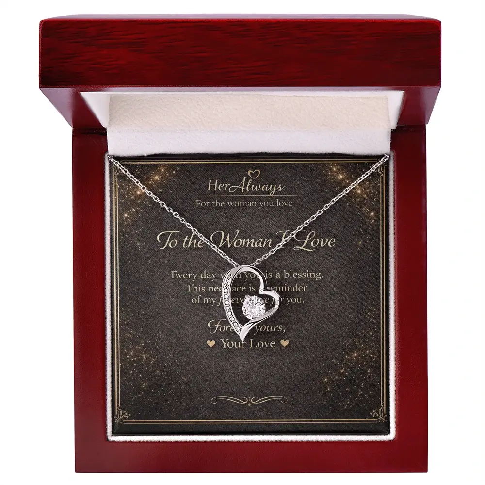
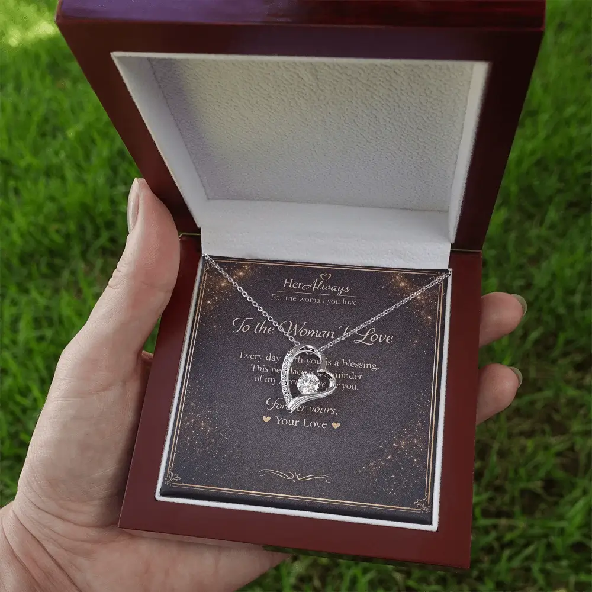

The best 50th birthday gift for your girlfriend is something personal that shows what she means to you, not a joke about her age. A keepsake with your own words, a piece of jewelry she will wear, or an experience planned around her tastes all work. Budget roughly $50 to $400 for most gifts. If you want a necklace, the Forever Love Necklace ($79.95) carries a card in your own words. US orders arrive in about 6-12 business days (6-15 for international), so order soon if her birthday is close. Below: 15 ideas by budget, what to write, and what to avoid.
Quick Picks by Budget
Jewelry | Unique | Luxury | She wants nothing | Card | Avoid | FAQ
| Budget | Best pick | Why it works |
|---|---|---|
| Under $50 | A handwritten letter or “reasons I love you” book | Costs little, and is the part she keeps. |
| $50–$120 | Necklace with your own card message, or a photo book | Wearable, personal and ready to give. |
| $120–$400 | Show tickets, a spa day or a five-stone “five decades” necklace | A shared evening or a piece that marks the milestone. |
| $400+ | A weekend away, or diamond studs | The big gesture, if it suits her. |
If She Says She Wants Nothing
Many women turning 50 already own what they want, and they say so. Do not take it as a reason to buy nothing. It means a gift will land best if it is about her, not about stuff. Three quick questions help you choose:
- Does she like attention? If yes, plan a dinner or a surprise with friends. If not, a private gift such as a letter or a necklace suits her better.
- Does she wear jewelry every day? If yes, jewelry is a safe pick. Match her metal first.
- Is she sentimental or practical? Sentimental: choose something with words or photos. Practical: choose an experience or something she will use.
Quiet way to find out: ask a close friend, or look at what she keeps on her dresser and wears most. Gifts tied to her habits tend to be the ones she keeps.
Jewelry and Keepsake Gifts
Jewelry is what the search results favour, and it suits a milestone because she can wear it. Prices below are typical ranges we saw in November 2026 and vary by shop.
| Idea | Typical price | Why it suits a 50th | Skip if |
|---|---|---|---|
| Necklace with your own message (HerAlways) | $59.95–$109.95 | She gets your words, not a template. | She wears only yellow gold. |
| Five-stone “five decades” necklace | About $85–$210 | Marks the milestone without printing 50 on it. | She dislikes obvious age symbols. |
| Birthstone pendant | About $40–$210 | Personal and easy to wear daily. | You do not know her birth month. |
| Bracelet or cuff | About $65 and up | Good for a woman who rarely wears necklaces. | She never wears bracelets. |
| Real gold or diamond jewelry | $850+ for studs | Lasts for decades. | It would stretch your budget. |
Unique and Personal 50th Birthday Gifts
If jewelry is not her thing, these cost less and are often the gifts women keep longest.
| Idea | Typical price | Why it works |
|---|---|---|
| Photo book of your years together | $30–$80 | She can keep it and add to it. |
| Handwritten letter | Free–$10 | Costs nothing and often means the most. |
| “50 reasons I love you” set | $0–$25 | Fifty short notes fit the number without being a joke. |
| Video from friends and family | Free–$30 | Collect short clips from the people she loves. |
| Concert or show tickets | $80–$300 | Gives her something to look forward to. |
| Spa day | $100–$300 | Rest, for a woman who is always busy. |
| Weekend away | $300–$1,000+ | Time together, built around something she loves. |
Luxury 50th Birthday Gifts
If you want to go big, these are the usual choices. They only work if the budget is comfortable and the gift is hers, not yours.
| Idea | Typical price | Note |
|---|---|---|
| Diamond solitaire studs | About $850–$1,550 | A classic she can wear every day. |
| Designer perfume | About $115 and up | Choose a scent you already know she wears. |
| Diamond tennis bracelet | About $2,500 and up | The milestone splurge. Only if it is right for you both. |
Where Our Necklaces Fit, and Where They Do Not
HerAlways necklaces are not solid gold and have no diamonds. They are stainless steel or base metal with a gold finish and lab-created CZ stones, in a mahogany box. At $60 to $110 you pay for the design, the box and the card. They do not have “50” on them: the card marks the birthday, because you type your own message. Our two best picks for a milestone are below, and you can see all five designs in our collection.

1. Love Knot Necklace
Card: “To My Beautiful Love”, with your own message in place of the sample. A 6 mm lab-created CZ, not a diamond. See the love knot meaning.
Create Your Gift
2. Forever Love Necklace Best Seller
Card: “To the Woman I Love.” The heart needs no explanation. See the heart necklace meaning.
Create Your GiftIf she wants real gold or diamonds, plan a bigger budget elsewhere. For general guidance on choosing, see our necklace for girlfriend birthday guide.
What to Write on Her 50th Birthday Card
Keep it to two or three lines. Name one thing you love about her and add one wish. Avoid jokes about age. Six original examples:
- Fifty years of you, and I am grateful for every one I have shared. Happy birthday, my love.
- You make every year better than the last. Here is to the next fifty.
- I love the woman you are at fifty: kind, strong and always herself.
- Fifty is not a number I would change. It is the sum of everything I love about you.
- Whatever the next decade brings, I want to share it with you. Happy 50th.
- This is not a gift for turning fifty. It is a thank you for being you.
With HerAlways, you type your message after clicking Create Your Gift, and it is printed on the card. For more ideas, see 70+ necklace gift messages and what to engrave.
What to Avoid
- Age jokes. “Over the hill” mugs and wine glasses often read as teasing, not love.
- Practical home items. A vacuum or kitchen tool is not a milestone gift.
- A gift she must hint for. Ask a friend, not her.
- Overspending. Debt takes the joy out of a gift. A letter beats a purchase you regret.
- Ordering too late. Order as soon as you have chosen, not the week before.
When to Order So It Arrives on Time
US orders arrive in about 6-12 business days, which is roughly two weeks, and shipping is free. Count the days until her birthday:
| Days until her birthday | What to do |
|---|---|
| 17 or more | Order any necklace now, including the Custom Name. |
| 10 to 16 | Order today. It should arrive in time. |
| 7 to 9 | It may arrive in time, but we cannot promise it. Check our shipping page, and have a backup plan. |
| Under 7 | It will not arrive in time. Order anyway and give her a handwritten card on the day saying the necklace is on its way. |
Ordering from outside the US? International orders take 6-15 business days, so allow up to three weeks. An “on its way” card with a plan, such as dinner, still feels thoughtful.
Choose Her 50th Birthday Necklace

Not sure? The Forever Love Necklace is our safest pick: a heart pendant, a mahogany gift box and a card with your own message for her 50th.
Create Your GiftFAQ: 50th Birthday Gift for Girlfriend
What is a good 50th birthday gift for a girlfriend?
Something personal that shows what the last years with her mean to you. A keepsake with your own words, a piece of jewelry she will wear, or an experience you plan around her tastes all work. Skip joke gifts about age.
How much should I spend on my girlfriend’s 50th birthday gift?
There is no fixed rule. Sentimental gifts such as a photo book or a framed letter often cost $30 to $100. Jewelry in stainless steel or gold finish with CZ stones is about $60 to $110 at HerAlways. Diamond studs or a weekend trip start at several hundred dollars and go well beyond. Spend what fits your budget and her taste.
What is a symbolic gift for a 50th birthday?
Gold is the colour most often linked to a 50th, so gold-toned jewelry is a common choice. It is a custom, not a rule. Pieces that mark five decades, such as a five-stone necklace, are popular. A heart, an infinity loop or a knot also work as symbols of lasting love.
What do you give a woman who has everything for her 50th?
Give her something money cannot easily buy: your time and words. A letter, a photo book of your years together, a trip built around something she loves, or a necklace with a card in your own words. A thoughtful gift beats an expensive one.
Is jewelry a good 50th birthday gift for a girlfriend?
Yes, if she wears it. Match her metal, keep the style close to what she already owns, and add a personal message. If she wears only yellow gold, a silver-tone necklace may stay in the box.
Should a 50th birthday gift say “50” on it?
It does not have to. Many women prefer a gift that is about her, not her age. Put the milestone in the card instead, with a line such as what you love about the woman she is at 50.
Can I write my own message on the HerAlways card?
Yes. After you click Create Your Gift you type your own message and it is printed on the message card. If you leave it blank, the sample message shown on the product page is used. Our necklaces do not have “50” on them, so the card is where you mark the birthday.
Are HerAlways necklaces gold or diamond?
No. They are stainless steel or base metal with a 14k white gold finish, and lab-created cubic zirconia stones, not diamonds. Materials are listed on each product page.
When should I order a necklace for her 50th?
Order as soon as you have chosen. US orders usually arrive in about two weeks (6 to 12 business days) and international orders in 6 to 15. If her birthday is sooner, order anyway and give her a handwritten note on the day saying the necklace is on its way.
Related Guides
About This Guide
This guide is written by Elena Marsh for HerAlways. Prices, materials and shipping times for our necklaces come from our own product pages and were checked on November 7, 2026. Prices at other shops are typical ranges seen in Google results that day and vary by retailer. Because we sell necklaces, we point to our own designs where they fit, and we say when they do not.